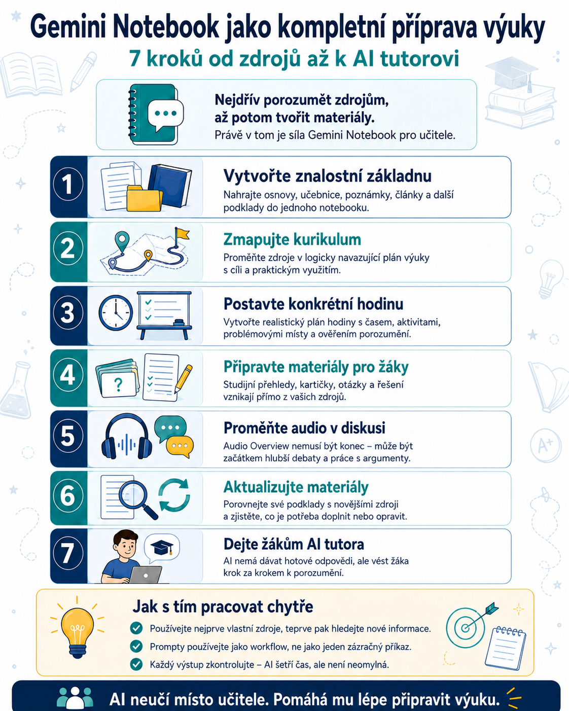

Gemini Notebook nemusí být jen nástroj, do kterého nahrajeme několik dokumentů a necháme si je shrnout. Může fungovat jako celé pracovní prostředí pro přípravu výuky – od prvotního zpracování zdrojů přes tematický plán a konkrétní hodinu až po materiály pro žáky a individuálního AI tutora.
Klíčový je ale správný postup.
Místo toho, abychom začali příkazem:
„Vytvoř mi hodinu na téma…“
je mnohem spolehlivější pracovat postupně:
Právě tento postup využívá jednu z největších výhod Gemini Notebooku: AI může pracovat nad konkrétními materiály, které jí sami poskytneme, místo aby odpověď skládala pouze ze svých obecných znalostí.

1. Nejprve vytvořte kvalitní znalostní základnu
Do notebooku můžete nahrát například:
- tematický plán,
- ŠVP nebo jiné kurikulární dokumenty,
- učebnici,
- pracovní sešit,
- vlastní poznámky,
- prezentace,
- odborné články,
- metodické materiály,
- starší testy,
- další zdroje používané ve výuce.
A teď přijde důležitá věc:
Ještě nic nevytvářejte.
Nejprve nechte AI zjistit, co vlastně ve zdrojích máte.
Prompt
Proč tento krok dělat
AI tak nejprve pozná terén.
Učitel zároveň získá rychlý přehled:
- co se ve zdrojích opakuje,
- kde si zdroje odporují,
- co je skutečně důležité,
- co v podkladech chybí.
Teprve potom má smysl začít plánovat výuku.
2. Ze zdrojů vytvořte mapu výuky
Jakmile máme zmapované zdroje, můžeme z nich vytvořit strukturovaný plán.
Může jít o jeden tematický celek, několik týdnů nebo třeba celé pololetí.
Prompt
To poslední je mimochodem velmi užitečné.
AI často vytvoří krásně vypadající plán, ve kterém ovšem v půlce zjistíte, že žák potřebuje umět něco, co jste ho ještě neučili.
Tímhle jí preventivně šlápneme na brzdu.
3. Z tematického celku vytvořte konkrétní hodinu
Teď už můžeme jít na úroveň jedné vyučovací hodiny.
Původní podobné prompty často počítají se šedesátiminutovou výukou. Na české střední škole ale většinou potřebujeme nacpat realitu do 45 minut.
Proto je lepší délku hodiny zadat jako proměnnou.
Prompt
Tím už nedostáváme jen „přípravu hodiny“, ale skoro hotový scénář.
4. Vytvořte kompletní balíček materiálů pro žáka
Máme plán. Máme hodinu.
Teď můžeme Gemini Notebook nechat vytvořit materiály, které budou žáci skutečně používat.
Prompt
Výhodou Gemini Notebooku je právě možnost vrátit se od tvrzení ke zdroji.
To je při kontrole výukových materiálů zatraceně příjemná vlastnost.
5. Audio Overview nepoužívejte jen jako „AI podcast“
Jednou z nejznámějších funkcí Gemini Notebooku je možnost vytvořit ze zdrojů zvukový přehled.
Jenže tím možnosti nekončí.
Mnohem zajímavější je použít audio jako první krok k další aktivitě.
Žáci si například nejprve poslechnou přehled tématu a následně začnou informace rozebírat, porovnávat a zpochybňovat.
Prompt pro následnou diskusi
Tady se z AI podcastu stává skutečná výuková aktivita.
A to už je podstatně zajímavější než jen „pusťte si to cestou autobusem“.
6. Zkontrolujte, zda vaše materiály nezestárly
Tento krok je trochu jiný než předchozí.
Doteď jsme AI úmyslně drželi uvnitř vlastních zdrojů.
Teď jí naopak dovolíme podívat se ven.
Pokud je k dispozici funkce Deep Research nebo jiný nástroj pro vyhledávání aktuálních informací, můžeme porovnat vlastní materiály s novějšími zdroji.
Prompt
Tohle je výborný způsob, jak jednou za čas udělat revizi vlastní digitální učebnice nebo tematického celku.
7. Udělejte z notebooku osobního AI tutora
A nakonec můžeme prostředí využít přímo pro žáky.
Pokud mají přístup k notebooku s vhodně vybranými materiály, mohou AI používat jako tutora, který pracuje nad stejnými zdroji jako oni.
Zásadní je ale instrukce:
Nedávej žákovi okamžitě správnou odpověď.
Jinak jsme si vytvořili velmi sofistikovaný opisovací stroj.
Prompt pro žáka
A tady se dostáváme k jedné z nejzajímavějších možností AI ve vzdělávání.
Ne:
„AI, udělej mi úkol.“
Ale:
„AI, pomoz mi pochopit, jak ho mám vyřešit.“
Jeden notebook, několik rolí
Při tomto způsobu práce může jeden dobře připravený notebook postupně zastávat několik funkcí.
Pro učitele může být:
Pro žáka může být:
A přitom pořád pracuje nad stejným základním souborem zdrojů.
To je na tomto workflow možná nejcennější.
Co do Gemini Notebooku nahrát?
Čím kvalitnější znalostní základnu vytvoříte, tím lepší výsledky můžete očekávat.
Pro jeden předmět nebo tematický celek se mohou hodit například:
- ŠVP a tematický plán,
- učebnice a pracovní sešity, pokud je smíte tímto způsobem používat,
- vlastní prezentace a přípravy,
- pracovní listy,
- metodické materiály,
- odborné články,
- poznámky učitele,
- slovníčky pojmů,
- případové studie,
- starší testy a otázky.
Není ale dobrý nápad naházet do notebooku všechno, co najdeme na disku.
Kvalita zdrojů je důležitější než jejich počet.
Důležité pravidlo: oddělte dva režimy práce
Při používání tohoto workflow je užitečné vědomě rozlišovat:
🔒 Práce pouze s vlastními zdroji
Používáme ji při:
- vysvětlování učiva,
- tvorbě pracovních materiálů,
- tvorbě testů,
- plánování hodin,
- práci žáků s připravenou znalostní základnou.
V promptu můžeme jasně napsat:
🌐 Hledání nových informací
Používáme ho tehdy, když chceme:
- aktualizovat materiály,
- doplnit nový výzkum,
- najít novější data,
- ověřit, zda se něco nezměnilo.
Tady naopak AI výslovně povolujeme práci s externími zdroji.
Míchat oba režimy bez rozmyslu není ideální. Učitel pak přestává vědět, zda určitá informace pochází z jeho učebnice, nebo ji AI někde nově našla.
Nejlepší workflow není jeden geniální prompt
Na celém postupu je zajímavá ještě jedna věc.
Často hledáme „dokonalý prompt“, který po jednom stisknutí vytvoří perfektní hodinu.
Ve skutečnosti bývá mnohem spolehlivější série menších kroků:
- Pochop zdroje.
- Navrhni strukturu učiva.
- Připrav konkrétní hodinu.
- Vytvoř materiály.
- Nech žáky s informacemi aktivně pracovat.
- Pravidelně obsah aktualizuj.
- Použij AI jako tutora.
To už není sbírka promptů.
Je to workflow pro přípravu a vedení výuky s AI.
A právě tady podle mě začíná být Gemini Notebook pro učitele opravdu zajímavý: ne jako další generátor textů, ale jako prostředí, ve kterém lze propojit vlastní zdroje, plánování výuky, tvorbu materiálů a samostatné učení žáků.